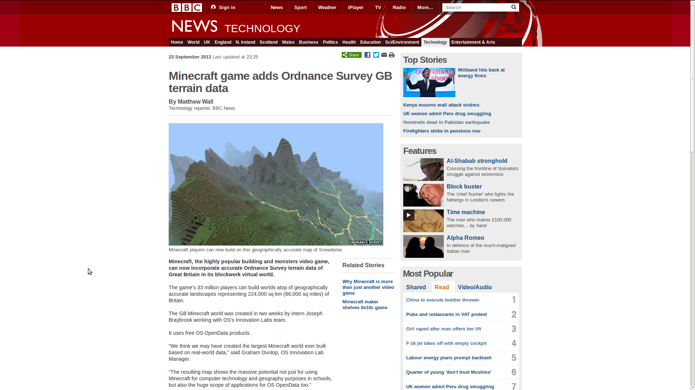
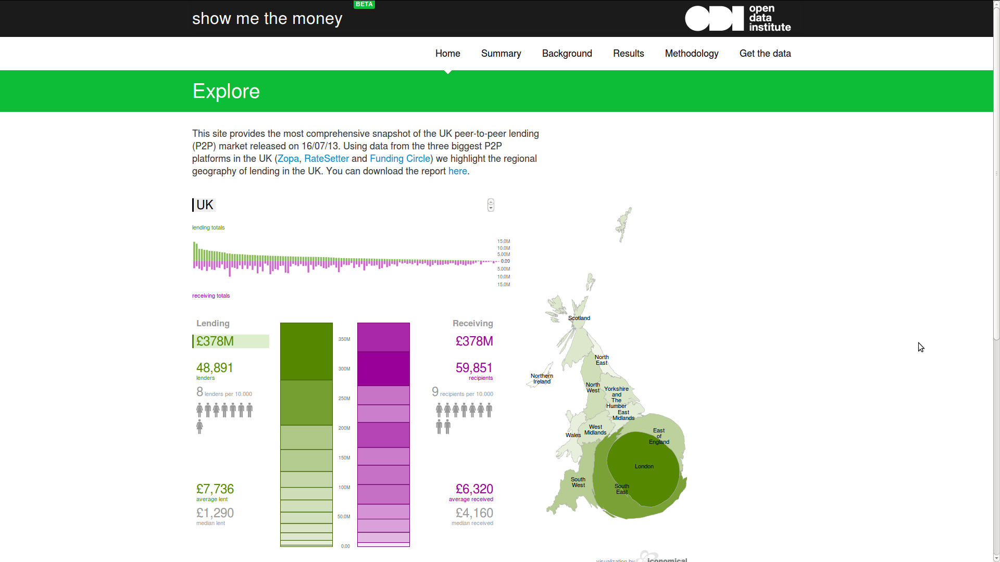
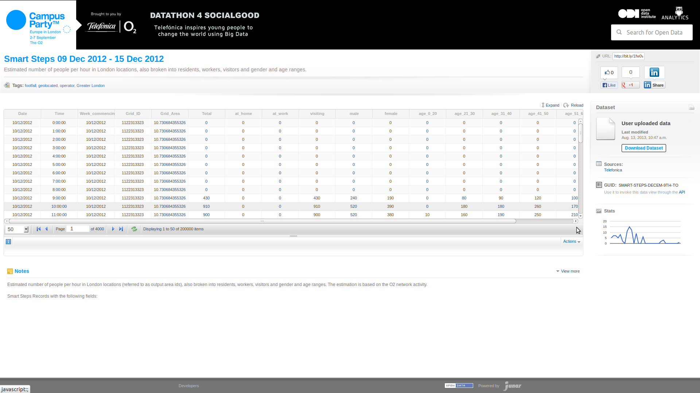

Open data is information that is available for anyone to use, for any purpose,— http://theodi.org/guide/what-open-data
at no cost.
A piece of data or content is open if anyone is free to use, reuse, and redistribute it — subject only, at most, to the requirement to attribute and/or share-alike.— http://opendefinition.org/

http://www.ordnancesurvey.co.uk/innovate/developers/minecraft-map-britain.html

http://smtm.labs.theodi.org/
http://dynamicinsights.telefonica.com/488/smart-steps

> %w{teachers accountants governments dogs cats hamsters DATA}.each do |x|
> puts "GitHub for #{x}!"
> end
GitHub for teachers!
GitHub for accountants!
GitHub for governments!
GitHub for dogs!
GitHub for cats!
GitHub for hamsters!
GitHub for DATA!
git diff --word-diff*.csv diff=csv[color]
ui = true
[alias]
diffcsv = diff --word-diff
[diff "csv"]
wordRegex = ...?
wordRegex=.
wordRegex=[^,\n]+[,\n]|[,]
Automatically configure your local git installation for CSV
curl -L http://theodi.github.io/csv-my-git/install.sh | bash
git diffcsv test.csv
Open Source GitHub-alike
Adding a large file (50m lines)
Changing a single line
# make a new dat store
dat init
# put a JSON object into dat
echo '{"hello": "world"}' | dat
# stream the most recent of all rows
dat cat
# pipe dat into itself (increments revisions)
dat cat | dat
# start a dat server
dat serve
# delete the dat folder (removes all data + history)
rm -rf .dat